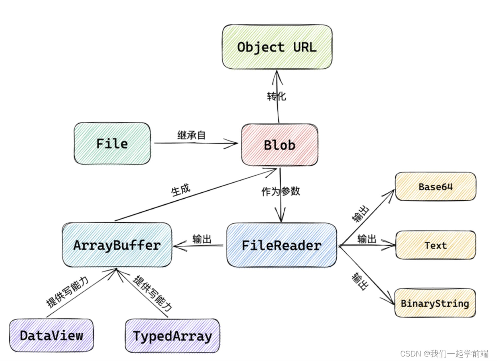
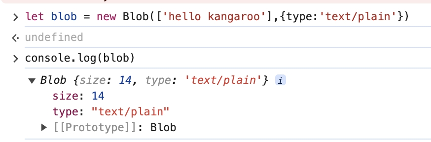

一文搞懂文件上传
前端如何将文件发送至服务器，是用什么格式的数据进行传输？Blob、File、FileReader、Base64 等概念都有何关联？

1.Blob
定义
Blob 全称为 binary large object ，即二进制大对象。blob 对象本质上是 js 中的一个对象，里面可以储存大量的二进制编码格式的数据。Blob 对象一个不可修改，从 Blob 中读取内容的唯一方法是使用 FileReader。
创建
1 | |
array：由 ArrayBuffer、ArrayBufferView、Blob、DOMString 等对象构成的，将会被放进 Blob；
options:指定两个属性（均可选）
- type:默认值为””,规定了放在在 blob 内的 MIME 类型。
- endings:默认为”transparent”，用于指定包含行结束符\n 的字符串如何被写入，不常用。
示例
1 | |

2. FileReader
定义
FileReader 是 HTML5 File 中的对象，它允许在客户端对用户选择的文件进行异步读取。使用 FileReader，我们可以读取用户的文件，并基于其内容执行各种操作，如预览图片、读取文本文件等。
方法
| 实例方法 | 说明 |
|---|---|
| abort() | 中止读取操作。在返回时，readyState 属性为 DONE。 |
| readAsArrayBuffer(file) | 读取文件并将其内容解读为二进制数据的 ArrayBuffer 对象。 |
| readAsBinaryString(file) | 读取文件并将其内容解读为二进制字符串。 |
| readAsDataURL(file) | 读取文件并将其内容解读为一个 base64 编码的数据 URL。 |
| readAsText(file,[encoding]) | 读取文件并将其内容解读为纯文本。encoding 参数是可选的，表示文本的编码。 |
上传图片预览案例
图片预览
1 | |
base64(待深入)
在 JavaScript 中，有两个函数被分别用来处理解码和编码 base64 字符串：
atob()：解码，解码一个 Base64 字符串；
btoa()：编码，从一个字符串或者二进制数据编码一个 Base64 字符串。
参考链接
一文搞懂文件上传
https://shaonan028.github.io/2024/07/09/前端文件上传操作/